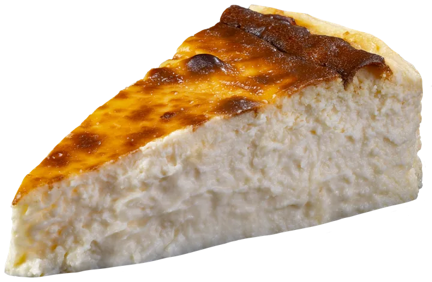

Patates braves: d'on venen i per què cada bar les fa a la seva manera.
Són a gairebé totes les barres d'Espanya i no n'hi ha dues d'iguals. La seva història té més dubtes del que sembla, i la salsa, més discussió que cap altra tapa.
Blog
Idees per sortir per Lleida, trucs de cuina que val la pena saber i, de tant en tant, el que passa a Vibra.
Són a gairebé totes les barres d'Espanya i no n'hi ha dues d'iguals. La seva història té més dubtes del que sembla, i la salsa, més discussió que cap altra tapa.

Un bastó de formatge blanc embolicat amb tires de massa i fregit fins que es daura. Així de senzill, i tot i això ningú no es posa d'acord sobre qui el va inventar.

Una bola de carn, una planxa molt calenta i un cop d'espàtula. Sembla poca cosa, però canvia l'hamburguesa sencera.

Amb els mateixos ingredients surt un pastís sec i esquerdat o un que tremola al centre. La diferència gairebé mai no és a la recepta, sinó al forn.